Statistical Project
Nicolas Makaroff
01/05/2019
Statistiques Descriptives
(a)
Avant de commencer toute chose, on analyse d’abord la base de donnée fournit afin de comprendre les valeurs dans celle-ci et éventuellement détecter des irrégularités.
knitr::opts_chunk$set(echo=TRUE,message=FALSE,warning=FALSE)
library(ggplot2)
library(magrittr)
library(dplyr)
library(tidyr)
data <- read.csv("Data_Binomial_16.csv")
summary(data)## cost victory sex age
## Min. : 0.0781 Min. : 29.26 Min. :0.000 Min. :0.00
## 1st Qu.: 26.2713 1st Qu.: 42.88 1st Qu.:0.000 1st Qu.:1.00
## Median : 64.6320 Median : 47.22 Median :0.000 Median :1.00
## Mean : 94.9607 Mean : 49.53 Mean :0.315 Mean :1.19
## 3rd Qu.:135.2717 3rd Qu.: 53.92 3rd Qu.:1.000 3rd Qu.:2.00
## Max. :789.8508 Max. :116.80 Max. :1.000 Max. :2.00data %>%
dplyr::select_if(is.numeric) %>%
tidyr::gather(variable, value) %>%
ggplot(aes(value))+
geom_dotplot()+
facet_wrap(~variable, scales="free")## `stat_bindot()` using `bins = 30`. Pick better value with `binwidth`.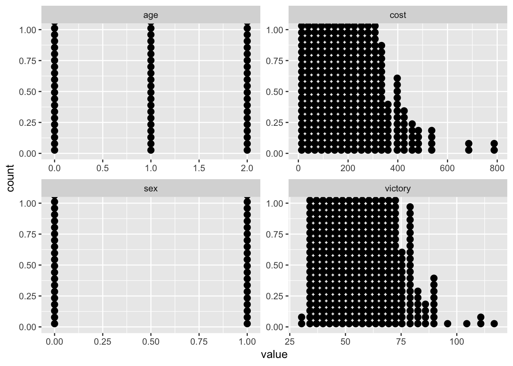
data %>%
select_if(is.numeric) %>%
gather(variable, value) %>%
ggplot(aes(y=value,x=variable, fill=variable, colour=variable))+
geom_boxplot(alpha=0.5)+
facet_wrap(~variable, scales="free")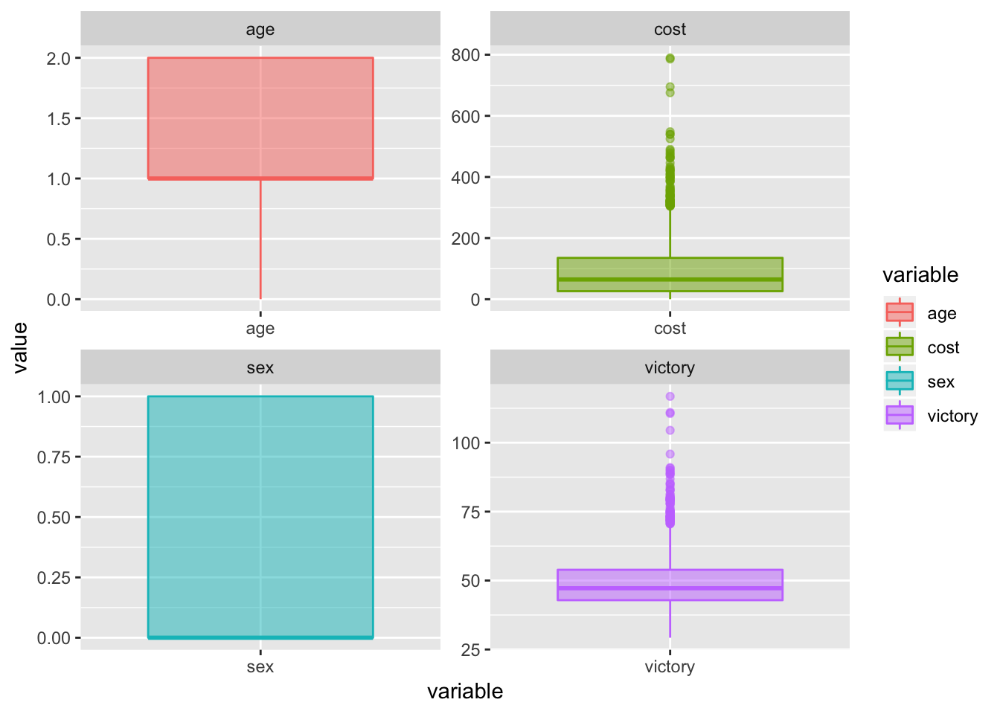
outlier_cost <- boxplot.stats(data$cost)$outOn remarque ainsi les valeurs absurdes dans le pourcentage de victoire (ainsi que le prix éxubérant de certains jeux de cartes).
Nous pouvons donc à nettoyer la base de données des valeurs incohérentes. Ici nous pouvons les supprimer parce que le sujet le présente comme cela mais dans une étude plus poussée de data une réelle question se poserait surtout pour les valeurs \(NaN\)
data_clean <- subset(data,victory > 0 & victory < 100 ,victory & sex)
summary(data_clean)## cost victory sex age
## Min. : 0.0781 Min. :29.26 Min. :0.0000 Min. :0.00
## 1st Qu.: 26.2381 1st Qu.:42.87 1st Qu.:0.0000 1st Qu.:1.00
## Median : 64.5414 Median :47.21 Median :0.0000 Median :1.00
## Mean : 93.6747 Mean :49.41 Mean :0.3151 Mean :1.19
## 3rd Qu.:134.6252 3rd Qu.:53.90 3rd Qu.:1.0000 3rd Qu.:2.00
## Max. :548.1184 Max. :95.88 Max. :1.0000 Max. :2.00data_homme <- subset(data_clean, sex == 1, victory & sex)
data_femme <- subset(data_clean, sex == 0 ,victory & sex)
boxplot(data_clean$victory~data_clean$sex,varwidth = TRUE,notch = TRUE,outline = TRUE ,col = c("blue","pink"),main="Répartition des victoire en fonction du sexe")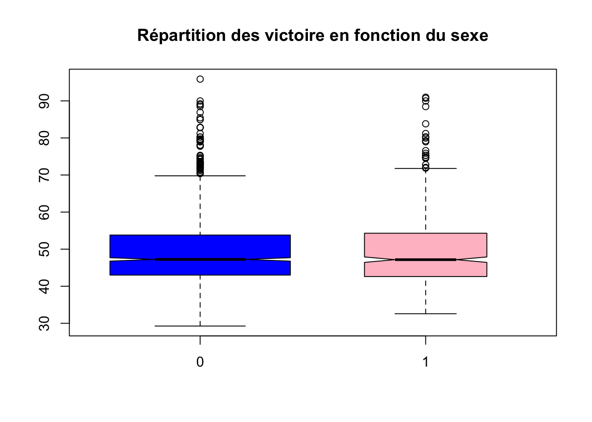
(b)
les âges étant déja rangés en trois catégories, on peut faire le même raisonnement que dans la question \(1(a)\).
boxplot(data_clean$victory~data_clean$age,varwidth = TRUE,notch = TRUE,outline = TRUE ,col = c("black","red","green"),main="Répartition des victoire en fonction de l'âge")
boxplot(data_clean$victory~cut(data_clean$cost, breaks = seq(0,500,30),xlabel=c(""), include.lowest = TRUE, ),varwidth = TRUE,notch = FALSE,outline = TRUE ,col = c("blue","pink"),main="Répartition des victoire en fonction du prix")
plot(data_clean$victory~data_clean$cost)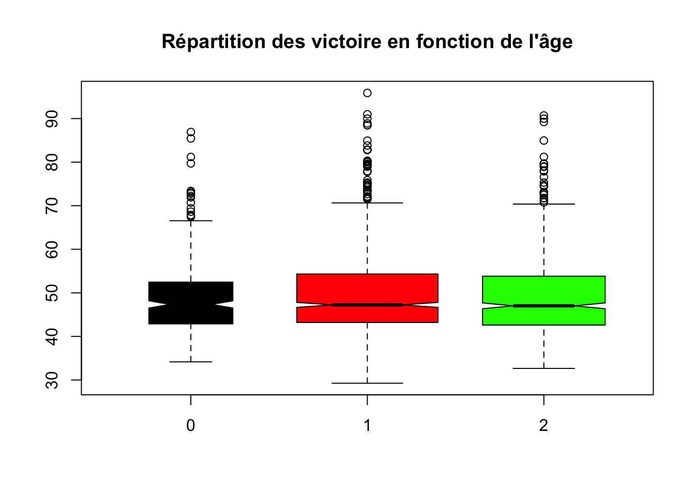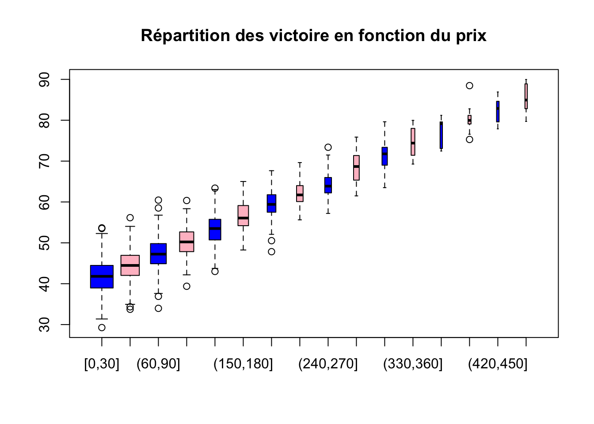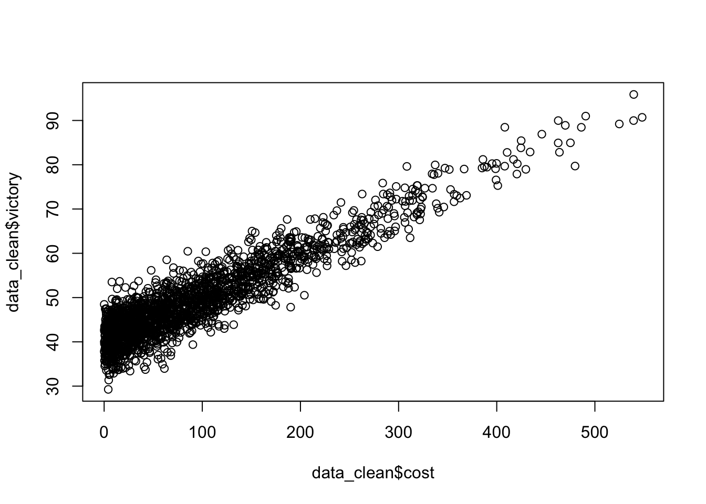 On remarque que les victoires lorsque le prix du jeu dépasse 150 sont négligeables.
(c)
data_clean$cost.cat <- cut(data_clean$cost,breaks = seq(0,50,2))
table(data_clean$cost.cat)##
## (0,2] (2,4] (4,6] (6,8] (8,10] (10,12] (12,14] (14,16] (16,18]
## 42 52 47 42 48 31 42 37 29
## (18,20] (20,22] (22,24] (24,26] (26,28] (28,30] (30,32] (32,34] (34,36]
## 38 38 22 26 29 40 32 33 22
## (36,38] (38,40] (40,42] (42,44] (44,46] (46,48] (48,50]
## 25 21 29 21 23 26 15hist(data_clean$cost,breaks = 30)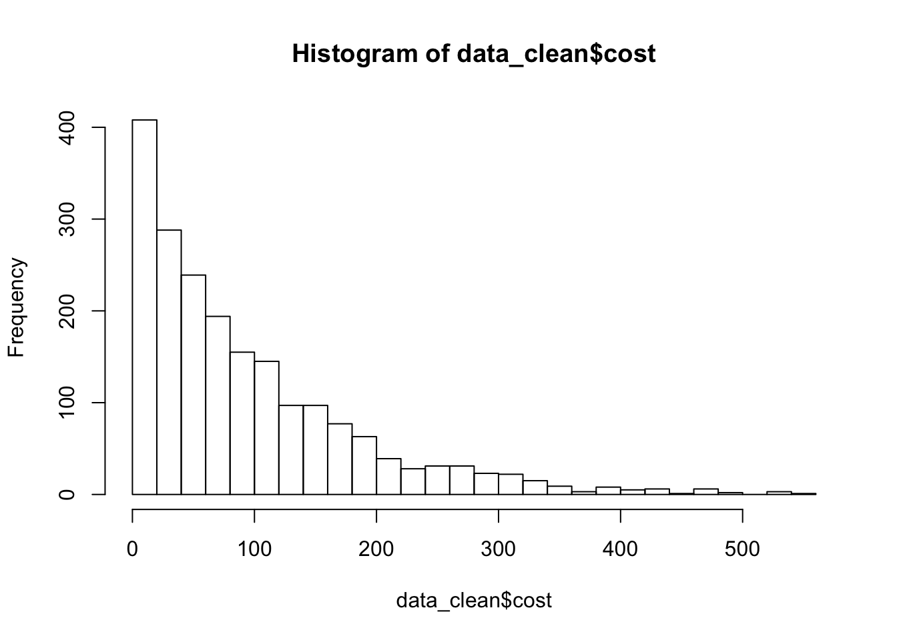
(d)
data_clean$victory.cat <- cut(data_clean$victory,breaks = seq(0,100,10))
table(data_clean$victory.cat)##
## (0,10] (10,20] (20,30] (30,40] (40,50] (50,60] (60,70] (70,80]
## 0 0 1 236 1022 478 176 61
## (80,90] (90,100]
## 19 3hist(data_clean$victory,breaks = 30)
par(new=TRUE)
# plot(dchisq(0.5*x,25))
hist(data_clean$victory,breaks=30,freq=FALSE)
#par(new=TRUE)
y<-seq(0,100,by=0.1)
lines(y,dchisq(0.5*y,25))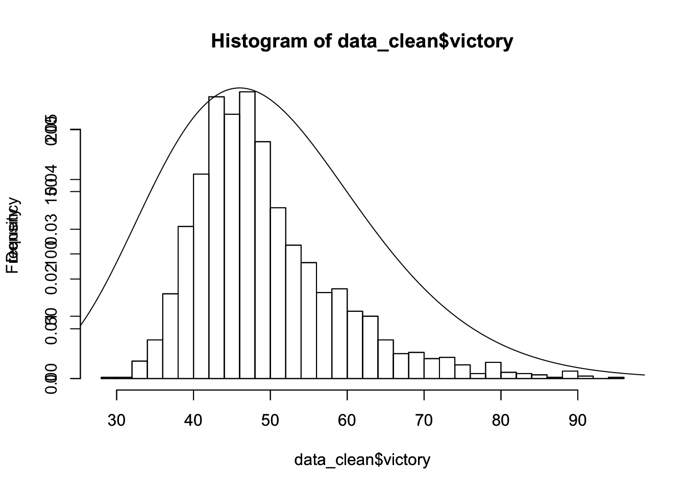
Estimations
(a)
tracer loi exponentielle
hist(data_clean$cost,breaks = 30,xlab="",ylab="")
x<-seq(from = min(data_clean$cost),to = max(data_clean$cost), length.out = length (data_clean$cost) )
par(new=TRUE)
plot(dexp(x,rate = 0.01),type="l",xlab = "prix du paquet",ylab="fréquence",col="red")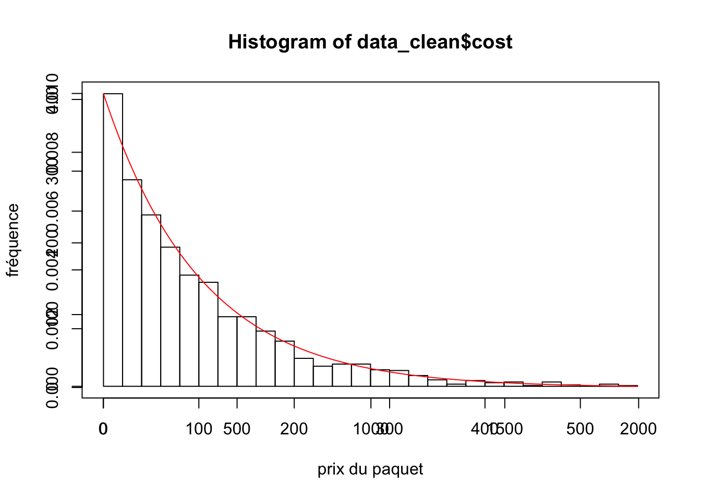
(b)
Calculons la vraisemblance du modèle : \(L(x_1,...,x_n;\lambda)=\prod\limits_i^nf(x_i;\lambda)=\prod\limits_i^n\lambda\exp(-\lambda(x_i-x_0)1_{[x_0,+\infty]}(x_i))=\lambda^n\exp(-\lambda\sum\limits_i^nx_i+\lambda nx_0)1_{[x_0,+\infty]}(\min x_i)\)
(c)
A l’aide de la question (a), on obtien la log-vraisemblance : \[\mathcal{L}(x_i;\lambda)=n\log(\lambda) - \lambda\sum\limits_i^nx_i + n\lambda x_0\] On dérive et on cherche le point d’annulation : \(0=\frac{n}{\lambda} - \sum\limits_i^n +nx_0\) Et ainsi l’EMV est \[\hat{\lambda}=\frac{n}{c}\text{ ou } c= -nx_0+\sum\limits_i^nx_i\] EMV de \[x_0=\min(x_i)\]
exp_1 <- function(lambda,echan) {
n <- length(echan)
xn <- 0
x0 <- min(echan)
for (i in echan){
xn <- xn + i
}
return( n*log(lambda)-lambda*xn+n*lambda*x0)
}
vect_p=seq(0.01,1,length.out=100)
vect_vraisemblance <- sapply(vect_p,function(vect_p) exp_1(vect_p,data$cost))
plot(vect_vraisemblance)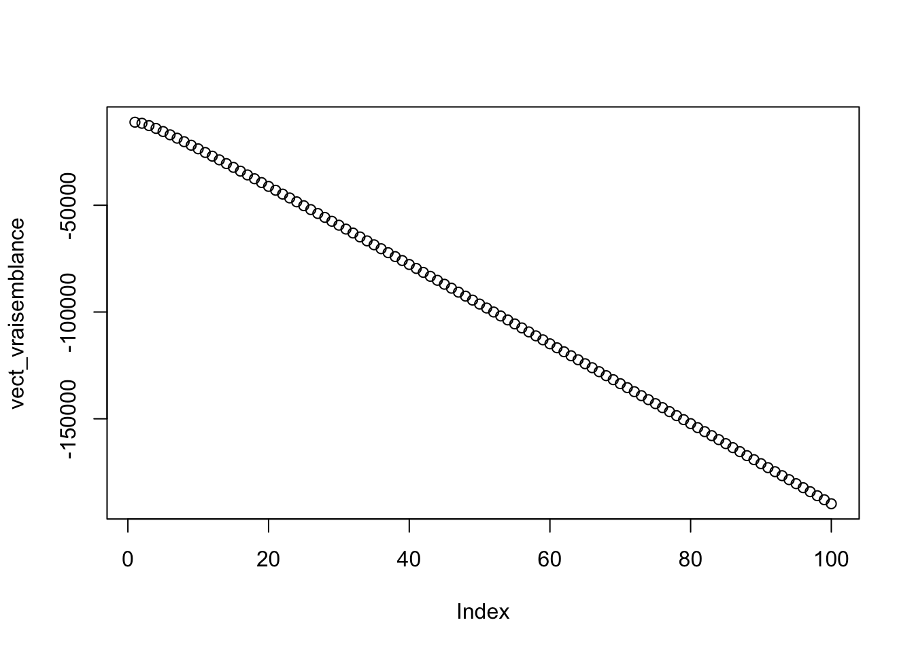
(d)
EMV <- 1/(mean(data_clean$cost)-min(data_clean$cost))
plot(vect_vraisemblance)
abline(h=EMV)(e)
La loi suivi par le modèle est une loi normale \(\mathcal{N}(40+\frac{P}{10},\sigma^2)\) Le calcul de la vraisemblance donne : \[L(x_i,\hat{\sigma})=\frac{1}{(2\pi)^{\frac{n}{2}}\sigma^n}\prod_i^n\exp(-\frac{1}{2}\frac{(x_i-\mu)^2}{\sigma^2})=\frac{1}{(2\pi)^{\frac{n}{2}}\sigma^n}\exp(\sum_i^n(x_i-40-\frac{P_i}{10}))\] Et donc, la log-vraisemblance est : \[\mathcal{L}(x_i,\hat{\sigma})=-\frac{n}{2}\log(2\pi) -n\log(\hat{\sigma})-\frac{1}{2\hat{\sigma^2}}\sum_i^n(x_i-40-\frac{P_i}{10})^2\] ## (f) Une dérivation par rapport à \(\sigma\) donne l’EMV : \[\hat{\sigma^2}=\frac{1}{n}\sum_i^n(x_i-40-\frac{P_i}{10})^2\]
norm_1 <- function(sigma,echan) {
n <- length(echan)
xn <- 0
for (i in echan){
xn <- xn +(data_clean$victory[i] - 40 - data$cost[i]/10)**2
}
return(-n/2 *log(2*pi)-n*log(sigma)-1/(2*sigma**2)*xn)
}
vect_p=seq(0.01,1,length.out=100)
vect_vraisemblance <- sapply(vect_p,function(vect_p) norm_1(vect_p,data_clean$victory))
plot(vect_vraisemblance)
abline(h=EMV)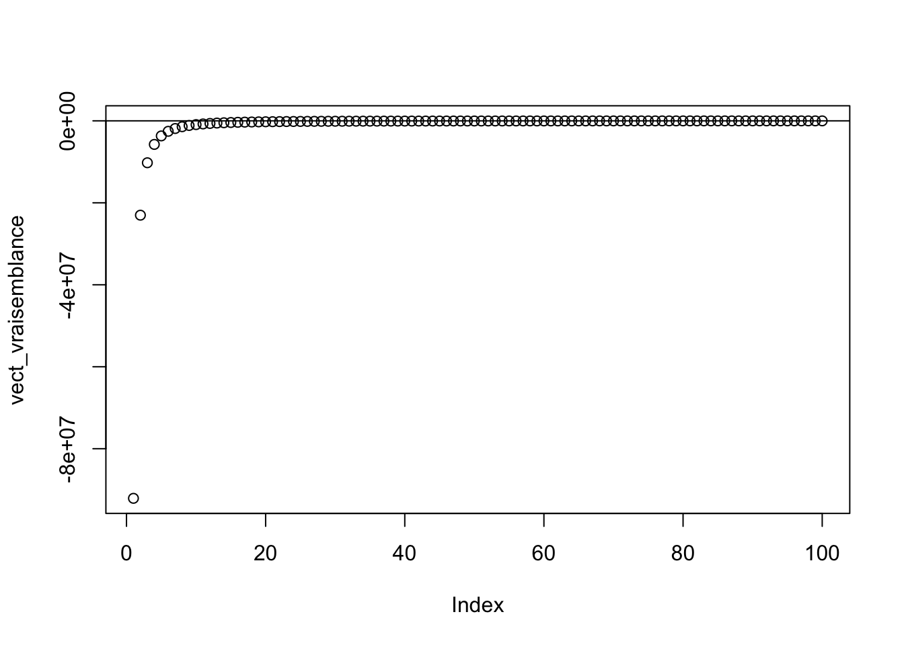
On vérifie que l’estimateur obtenue est bien maximum à l’aide d’une dérivée seconde.
Intervalles de confiance
(a)
La formule théorique de l’Intervalle de confiance de la variance \(IC_{1-\alpha}(\sigma^2)\), \(\mu\) étant inconnue dû manque d’information sur la translation \(x_0\), est : \[IC_{1-\alpha}(\sigma^2) = [\frac{nS^2(\omega)}{b},\frac{nS^2(\omega)}{a}]\] où \(S^2(\omega)=\frac{\sum^{n}_{i=1}(X_i(\omega) - \bar{X}(\omega))^2}{n}\) et où les réels \(a\) et \(b\) sont déterminés dans une table de la loi \(\chi^2(n-1)\) de la v.a. U par : \(\mathbb{P}(U\le a)=\alpha/2\) et \(\mathbb{P}(U\le b)=1-\alpha/2\) ceci est valable pour encadrer la parmètre \(\lambda\) car nous avons \(\frac{1}{\lambda^2}=\sigma^2\) pour la loi exponentielle.
On applique le théorème central limite : \[\sqrt{n}\frac{\bar{X}_n - \frac{1}{\lambda}-x_0}{\frac{1}{\lambda}} \sim \mathcal{N}(0,1)\]
Or : \[\frac{1}{\hat{\lambda}}=-x_0 + \bar{X}_n\] On obtient alors l’intervalle de confiance : \[[\hat{\lambda} - \frac{\hat{\lambda}}{\sqrt{n}}q_{1-\frac{\alpha}{2}};\hat{\lambda} + \frac{\hat{\lambda}}{\sqrt{n}}q_{1-\frac{\alpha}{2}}]\]
(b)
EMV <- 1/(mean(data_clean$cost)-min(data_clean$cost))
EMV## [1] 0.01068415I_C2 <- function(alpha){
n=length(data_clean$cost)
icg=EMV-EMV*qnorm(1-alpha/2,0,1)/sqrt(n)
icd=EMV+EMV*qnorm(1-alpha/2,0,1)/sqrt(n)
return(c(icg,icd))
}
val_alpha <- seq(0.5,0.99,length.out=45)
intervalle_confiance <- sapply(val_alpha,function(alpha) I_C2(alpha))
plot(seq(0.5,0.99,length.out = 90),intervalle_confiance)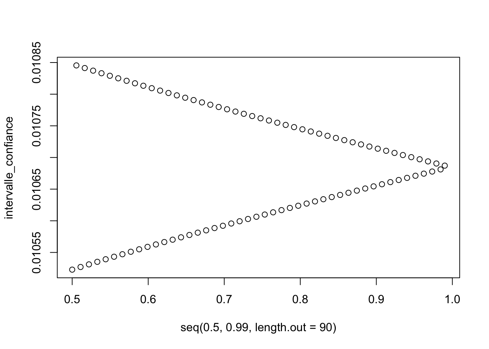
to_plot<-c()
for (i in 1:length(intervalle_confiance)){
append(to_plot,intervalle_confiance[i])
}
val_alpha2 <- rep(val_alpha,2)
# sort(val_alpha2)
plot(val_alpha2,to_plot)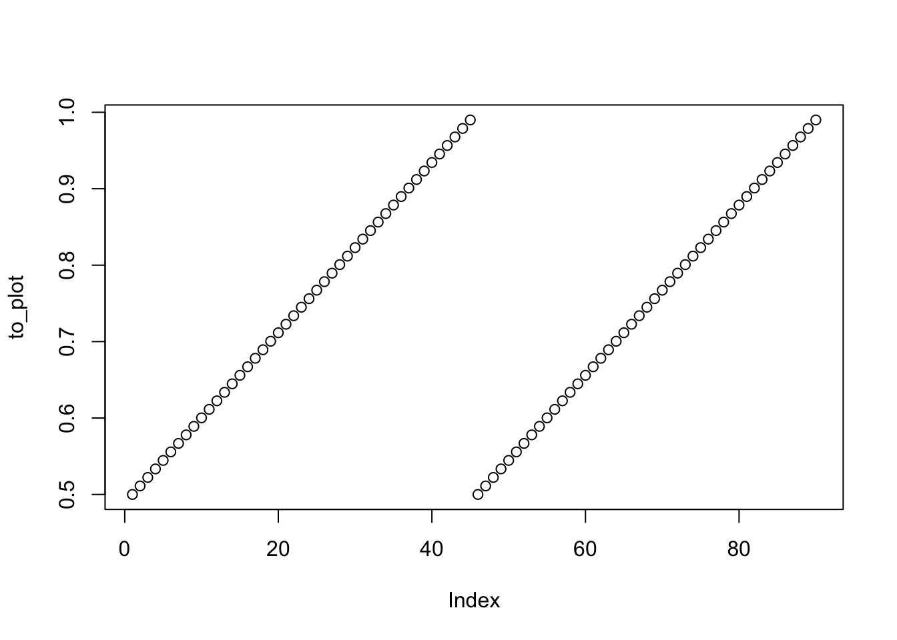
Tests
(a)
mean(data_homme$victory)## [1] 49.15906mean(data_femme$victory)## [1] 49.5248Les pourcentages de victoire des hommes et des femmes sont tous deux inférieurs à 50%.
(b)
Nous allons tester le fait qu’une femme a un pourcentage de victoire plus élever que celui d’un homme avec un risque de première espèce \(\alpha=0.05\). On pose le problème suivant : \[H_0: \mu_{femme}=\mu_{hommme}\] \[H_1: \mu_{femme} \neq \mu_{homme}\] On suppose que les \(X_{femme}\) et \(X_{homme}\) sont i.i.d. Sous l’hypothèse \(H_0\), on a alors \[X_{femme}-X_{homme} \sim \mathcal{N}(0,\sqrt{\sigma_{femme}^2-\sigma_{homme}^2})\]
Pour pouvoir utiliser le test de Student nous vérifier sa compatibilté avec une loi normale avec un test de kolmogorov.
ks.test(data_homme$victory, "pnorm", mean = mean(data_homme$victory), sd = sd(data_homme$victory))##
## One-sample Kolmogorov-Smirnov test
##
## data: data_homme$victory
## D = 0.11092, p-value = 3.791e-07
## alternative hypothesis: two-sidedt.test(data_homme$victory, mu = mean(data_femme$victory), alternative = "two.sided")##
## One Sample t-test
##
## data: data_homme$victory
## t = -0.95683, df = 628, p-value = 0.339
## alternative hypothesis: true mean is not equal to 49.5248
## 95 percent confidence interval:
## 48.40844 49.90968
## sample estimates:
## mean of x
## 49.15906(c)
On ne connait pas la loi assouvie par l’echantillon des paquets de cartes qui valent chers nous allons donc utiliser un test de Kolmogorov pour vérifier la loi normale d’écart-type=\(5\) dont on sait que la fonction de répartition est continue:
q <- quantile(data_clean$cost,0.7)
data_jeu_cher <- subset(data_clean, cost>=unname(q))
res <- ks.test((data_jeu_cher$victory)-mean(data_jeu_cher$victory),"pnorm",mean=0,sd=5)
res##
## One-sample Kolmogorov-Smirnov test
##
## data: (data_jeu_cher$victory) - mean(data_jeu_cher$victory)
## D = 0.1728, p-value = 5.551e-16
## alternative hypothesis: two-sideddata_jeu_cher$victory.cat <- cut(data_jeu_cher$victory,breaks = seq(0,50,2))
table(data_jeu_cher$victory.cat)##
## (0,2] (2,4] (4,6] (6,8] (8,10] (10,12] (12,14] (14,16] (16,18]
## 0 0 0 0 0 0 0 0 0
## (18,20] (20,22] (22,24] (24,26] (26,28] (28,30] (30,32] (32,34] (34,36]
## 0 0 0 0 0 0 0 0 0
## (36,38] (38,40] (40,42] (42,44] (44,46] (46,48] (48,50]
## 0 0 0 5 0 9 31hist(data_jeu_cher$victory-mean(data_jeu_cher$victory),breaks = 30)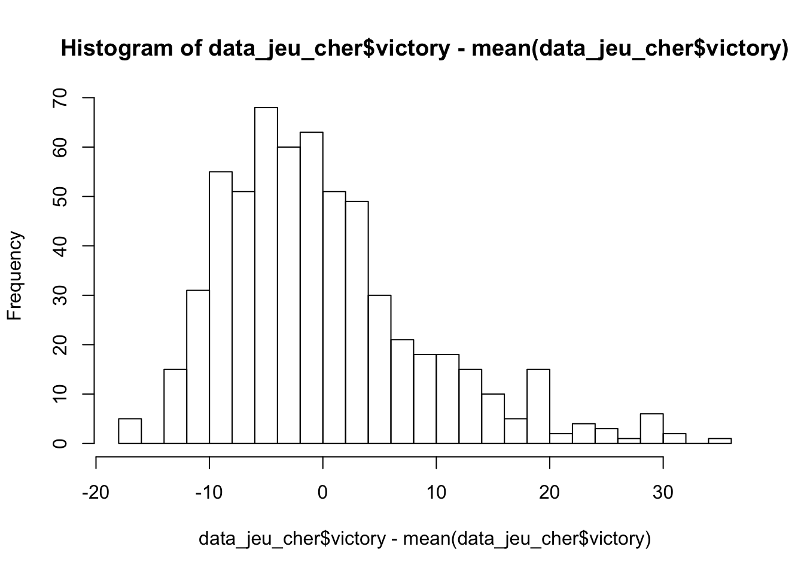 La valeur de la \(p-value\) confirme que la loi suivi est bien normale.